【サカつく2026】今度はポルトガルでカウンター強化!?新SP「クリスティアーノ・ロナウド」のプレミアムSP選手スカウトは引くべき？新SP選手4名を徹底評価
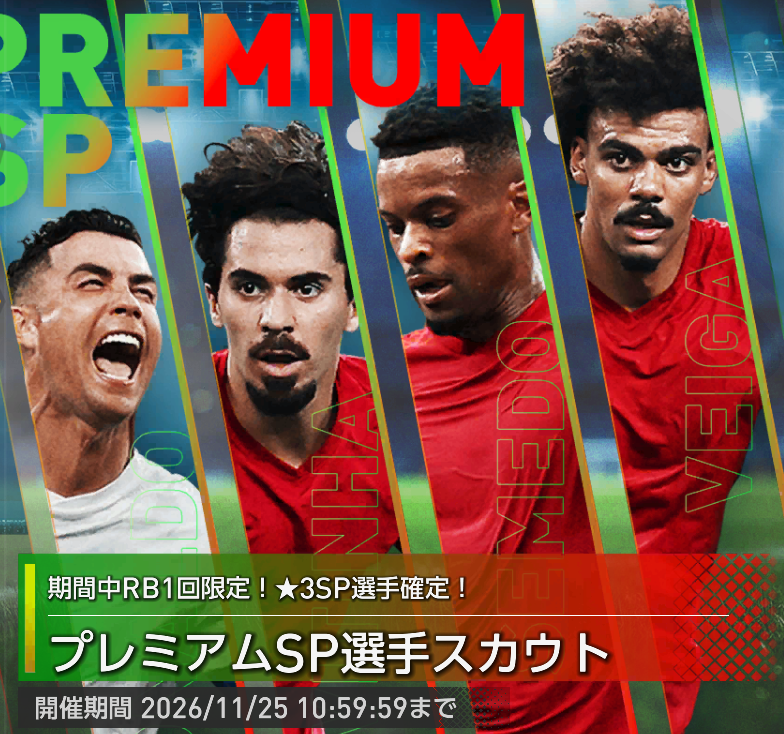
2026年10月28日、ポルトガル国籍×カウンターポリシーの新★3SP選手4名が登場しました。目玉はクリスティアーノ・ロナウドですが、カウンター強化の鍵は新たな金フォメコン「セレソン・ダス・キナス'26」に必要なネルソン・セメドとヴィティーニャです。
今回のスカウトは「引けるだけ引くべきか」「11月の追加選手を待つべきか」が難しい内容。4名の実数値・スキル・既存選手との比較・代用／互換候補まで確認し、手持ちの編成別に判断します。
読者アンケート｜このガチャ引く？
新プレミアムSP、みんなはどうする？ 投票すると回答傾向を確認できます。
先に結論：カウンター強化なら引きたい。ただし11月の追加選手を見てから判断も有力
カウンター主軸で「セレソン・ダス・キナス'26」を使うなら、今回のプレミアムSPは可能な限り確保したいスカウトです。中でもネルソン・セメド（★★★★★）とヴィティーニャ（★★★★☆）が最重要。条件を満たすSPの希少性が高く、ポルトガル国籍による追加強化も期待できます。
ただし、今回の4人をコンプリートしても発動指定4枠が揃うわけではありません。特にLWの「サイドアタッカーⅡ」は、現時点で入手可能なカウンター★3SPがいないため、他ポリシー選手を使う必要があります。日本代表SPなどで既にカウンターを強化できている監督は、急いで全力投入せず11月の追加選手を見て判断するのが堅実です。
カウンターを主軸にしていてセメドの「攻撃的FBⅢ」が欲しい人、ポルトガルで金フォメコンを組む人。
カウンターの主力が揃っている人、モドリッチなどの代役がいる人、追加のポルトガルSPを待ちたい人。
プレミアムSP選手スカウトの注目ポイント
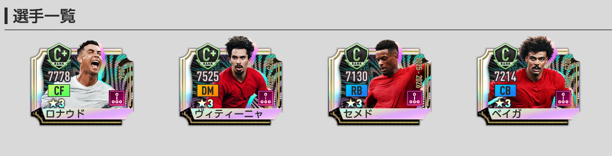
- 開催：2026年10月28日（水）13:00～11月25日（水）10:59:59（ゲーム内トップ画像表記）。
- ★3排出率：通常タブの1日1回100RB、300GB／3000GBで5%。新4名のピックアップあり。
- ★3抽選の対象：2026年10月14日登場分（イブラヒマ・コナテまで）。10月21日追加分は対象外です。
- 3000RBの1回限定★3確定10連：10枠目は★3確定ですが、新4名のいずれかが確定するわけではありません。1～9枠目の★3抽選にはピックアップ設定あり。
- 終了後：今回の新4名は恒常「SP選手スカウト」へ追加されない予定。専用メダルは1枚につき通常SPスカウトメダル1枚へ変換されます。
スカウトの終了時刻は添付されたゲーム内画像に「11月25日10:59:59」と表示されています。引く予定がある場合は、必ずゲーム内のお知らせとスカウト画面で最終確認してください。
新金フォメコン「セレソン・ダス・キナス'26」の発動条件
新たなカウンター金フォメコンは4-3-3B／指定4枠です。4名全員を手に入れることと発動条件の成立は別問題。次の配置に合うプレースタイルが必要です。
コンボ効果と国籍の追加強化
フィールド上のポルトガル国籍選手1名につき、上記4能力へそれぞれ追加で+2%。発動条件に国籍指定はありませんが、追加強化を最大化するにはポルトガル選手の人数が重要です。クリロナとレナト・ベイガは指定枠には入りませんが、この国籍人数の増加に貢献します。
当サイトの最強フォーメーションランキング（2026年10月28日の全登録選手データ・通常最強）では、C061の最適編成は4位／補正後実数値224,288。これは国籍追加効果と既存選手を含む理論上の編成値であり、実戦勝率を保証するものではありません。現在の最強編成・ランキングを確認する
排出率・提供割合の注意点
通常の1日1回100RBは★3排出率5%・新4名がそれぞれ1%。対して、3000RBの★3確定10連は、確定枠にピックアップ確定の特別補正がない点を見落としがちです。
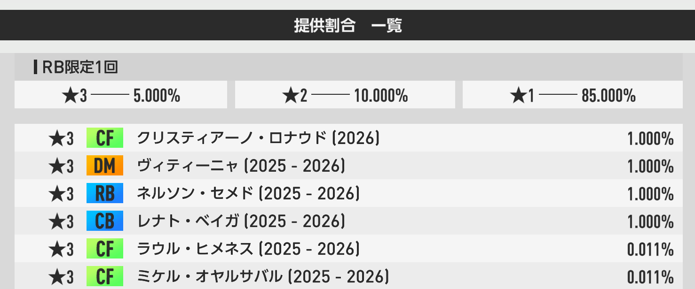
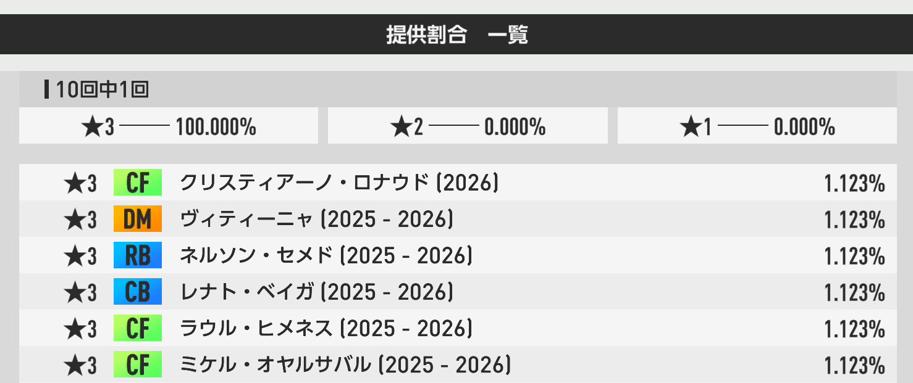
掲載画像はZIPに含まれる元ファイル名を保持しています。表示上の枠名と画像ファイル名が対応していないため、上記キャプションは画像内の「RB限定1回」「10回中1回」という表記を基準にしました。
新SP選手4名のおすすめ度ランキング
おすすめ度は、単体最大総合力の高い順ではなく、金フォメコンの指定条件、代用の有無、育成投資、手持ちへの影響を考慮したソニオTVの独自評価です。
1. ネルソン・セメド
★★★★★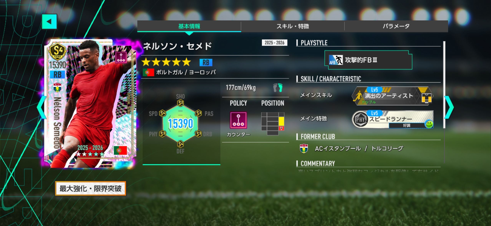
スペック・スキル・特徴
ゲーム内の17項目パラメータ画像を見る
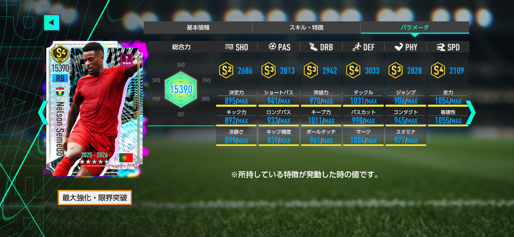
画像は最大強化時の画面。特徴発動などゲーム内の表示条件により値が変動するため、以下のデータベース実数値とは直接同一視しないでください。
ゲーム内のスキル・特徴画像を見る
性能評価：唯一の「攻撃的FBⅢ」。性能より発動条件の希少性
今回の最優先候補はネルソン・セメド。現行の★3SP選手データでは「攻撃的FBⅢ」はこの1名だけです。「セレソン・ダス・キナス'26」のRB指定枠はLvⅢが必要で、LvⅡの選手では条件を満たせません。ポリシーや国籍以前に、指定枠を埋められる点が最大の強みです。
一方、最大総合力15,390はRB適性の★3SP23名中4位。アクラフ・ハキミやマルコス・ジョレンテより低く、単体の総合力だけで最強RBとは言えません。ただし条件の希少性に価値があるため、カウンターを主力にしていない場合も将来のフォメコンを見越して確保を検討する価値があります。
スピードと守備がバランス良く整い、SPDは2,109、DEFは3,033。守備的FBとは異なる役割を担わせながら、必要なLvⅢ指定を満たせるのが魅力です。
競合比較：ネルソン・セメド vs アクラフ・ハキミ
17項目の基本能力値を6カテゴリに合算した比較です。★3SPの実数値合計は 16,411 対 16,605（差 -194）。スキル・ポリシー補正・フォメコン補正・試合中の状況は含みません。
各カードの値：左が今回の選手／右が比較選手。SHO・PAS・DRB・DEF・PHYは各3項目、SPDは2項目の合計値です。
代用選手・互換選手（画像付き）
選出条件：★3SP、適性ポジション一致、同じプレースタイル。基準選手がLvⅢならLvⅢのみ、LvⅡならLvⅡ・Ⅲが対象。代用は同ポリシー、互換はポリシー不問。最大総合力順に各最大3名。今回の選手本人は除外しています。
2. ヴィティーニャ
★★★★☆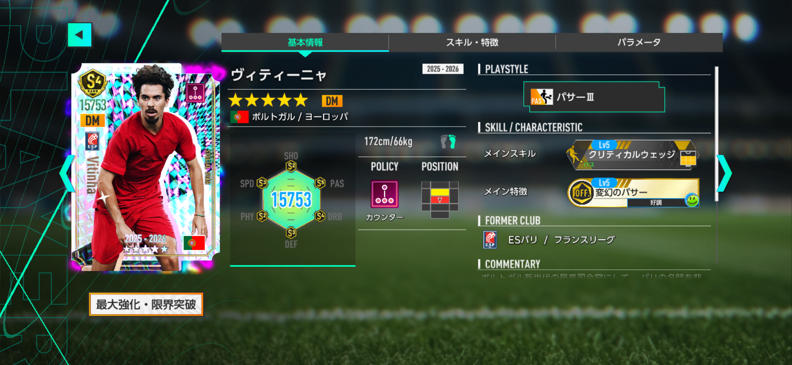
スペック・スキル・特徴
ゲーム内の17項目パラメータ画像を見る
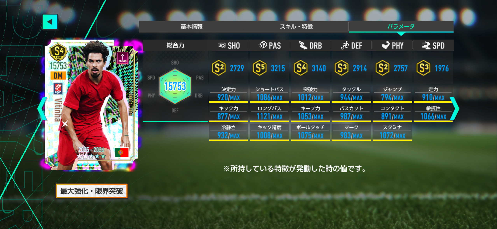
画像は最大強化時の画面。特徴発動などゲーム内の表示条件により値が変動するため、以下のデータベース実数値とは直接同一視しないでください。
ゲーム内のスキル・特徴画像を見る
性能評価：カウンター初「パサーⅢ」。攻守に優れた要のDM
ヴィティーニャは「セレソン・ダス・キナス'26」の右DM指定枠に合致するパサーⅢ。★3SPのパサーⅢはルカ・モドリッチに続く2人目で、カウンターでは初登場となります。発動条件を満たすだけならポゼッションのモドリッチでも対応できますが、カウンター一致とポルトガル国籍によるコンボ追加効果まで視野に入れるとヴィティーニャの優先度は高まります。
最大総合力15,753はDM適性の★3SP60名中1位。17能力の実数値合計も16,731で、モドリッチの16,548を183上回ります。特にPAS、DEF、PHY、SPDが高く、パス供給と守備への貢献を両立できる構成です。メインスキルも金ランクで、編成の軸として期待できます。
ただし「パサーⅢが必須＝ヴィティーニャ本人がいないと絶対に発動しない」わけではありません。まずは発動に必要な4枠と国籍による追加効果を切り分け、手持ちのモドリッチの育成状況と比較してください。
競合比較：ヴィティーニャ vs ルカ・モドリッチ
17項目の基本能力値を6カテゴリに合算した比較です。★3SPの実数値合計は 16,731 対 16,548（差 +183）。スキル・ポリシー補正・フォメコン補正・試合中の状況は含みません。
各カードの値：左が今回の選手／右が比較選手。SHO・PAS・DRB・DEF・PHYは各3項目、SPDは2項目の合計値です。
代用選手・互換選手（画像付き）
選出条件：★3SP、適性ポジション一致、同じプレースタイル。基準選手がLvⅢならLvⅢのみ、LvⅡならLvⅡ・Ⅲが対象。代用は同ポリシー、互換はポリシー不問。最大総合力順に各最大3名。今回の選手本人は除外しています。
3. クリスティアーノ・ロナウド（2026）
★★★☆☆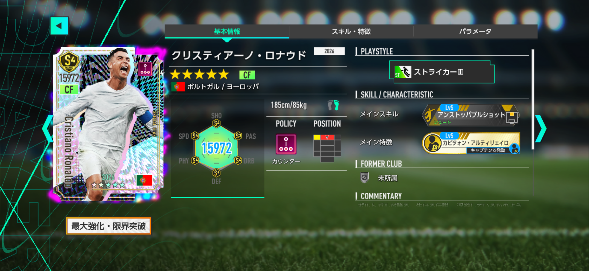
スペック・スキル・特徴
ゲーム内の17項目パラメータ画像を見る
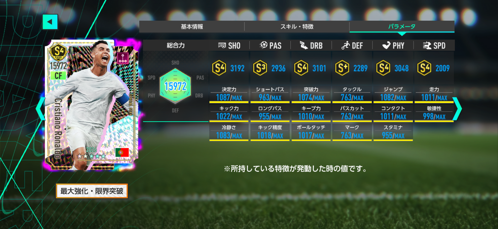
画像は最大強化時の画面。特徴発動などゲーム内の表示条件により値が変動するため、以下のデータベース実数値とは直接同一視しないでください。
ゲーム内のスキル・特徴画像を見る
性能評価：総合力は強力。ただし恒常版で役割を補える
新クリスティアーノ・ロナウドは初期総合力7,468、最大総合力15,972。カウンター★3SP129名の中では最大総合力1位であり、単体能力は優秀です。ただし同じ「ストライカーⅢ」の恒常★3ロナウドも最大総合力15,972。今回の金フォメコンの指定4枠にはCFが含まれないため、発動だけを目的とするなら優先して引く必要はありません。
恒常版と比べると新ロナウドはPAS・DRB・PHYがわずかに上、SPDは2,009対1,752で257高く、動きの速さを重視するなら魅力があります。一方、SHOとDEFは恒常版の方が高く、得点力の単純な上位互換ではありません。17項目の合計は新ロナウドが346上ですが、スキルの発動や実戦の勝率を直接示すものではありません。
限定版を引いて育て直すのか、いつでも獲得機会のある恒常版を限界突破させるのか。所持状況・育成投資・カウンター編成へのこだわりで決めたい1名です。ポルトガル国籍の追加効果を重視する編成なら獲得価値は上がります。
競合比較：クリスティアーノ・ロナウド（2026） vs クリスティアーノ・ロナウド
17項目の基本能力値を6カテゴリに合算した比較です。★3SPの実数値合計は 16,575 対 16,229（差 +346）。スキル・ポリシー補正・フォメコン補正・試合中の状況は含みません。
各カードの値：左が今回の選手／右が比較選手。SHO・PAS・DRB・DEF・PHYは各3項目、SPDは2項目の合計値です。
代用選手・互換選手（画像付き）
選出条件：★3SP、適性ポジション一致、同じプレースタイル。基準選手がLvⅢならLvⅢのみ、LvⅡならLvⅡ・Ⅲが対象。代用は同ポリシー、互換はポリシー不問。最大総合力順に各最大3名。今回の選手本人は除外しています。
4. レナト・ベイガ
★★☆☆☆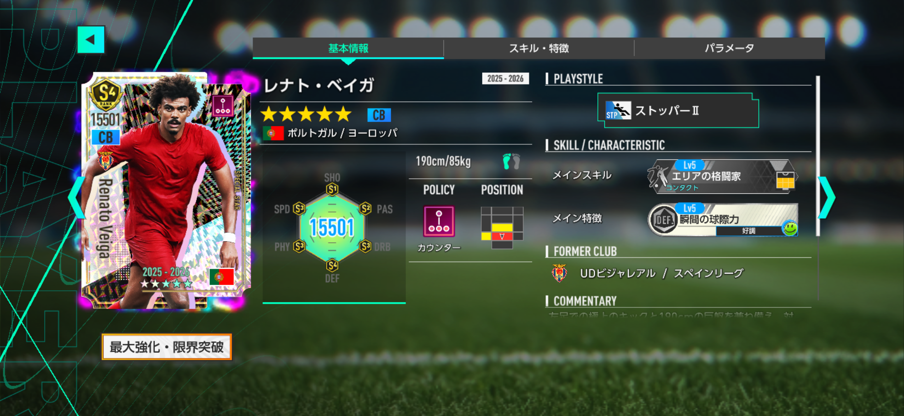
スペック・スキル・特徴
ゲーム内の17項目パラメータ画像を見る
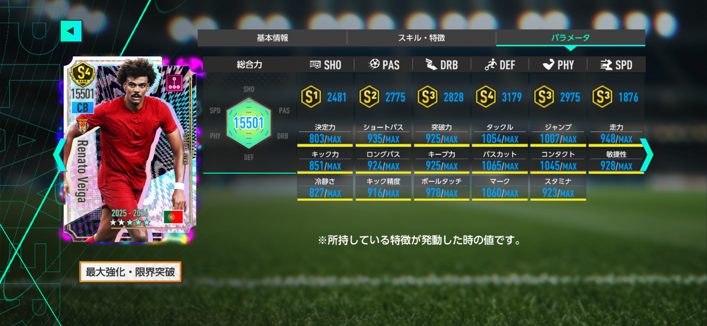
画像は最大強化時の画面。特徴発動などゲーム内の表示条件により値が変動するため、以下のデータベース実数値とは直接同一視しないでください。
ゲーム内のスキル・特徴画像を見る
性能評価：ポルトガルCBという価値はあるが競合も豊富
レナト・ベイガは、カウンター×ポルトガル国籍のCBとして貴重な存在です。既存のムービングSP「ルベン・ディアス」もポルトガル国籍のCBなので、ポルトガルCBとしての初実装ではありません。一方、カウンター×ポルトガル国籍の★3SP CBは初登場です。ただし「セレソン・ダス・キナス'26」の発動指定4枠にはCBがなく、ベイガを持っていなくてもコンボ自体は発動できます。採用の主な目的はポルトガル国籍人数の追加効果を増やすことです。
一方、カウンターのCB適性選手は19名存在し、ストッパーⅡ自体も希少ではありません。ヨシュコ・グヴァルディオル、ウィリアム・サリバ、伊藤洋輝〔2026〕らはCBの重要能力であるDEF合計が上。ベイガもDEF3,179と悪くないものの、国籍ボーナスを考慮しない純粋な守備力では競争が厳しいポジションです。
今後ポルトガル選手が増えて国籍追加効果を維持できるなら、ベイガを別のCBへ入れ替えた方が強い編成になる可能性もあります。今回は4名の中で最も獲得優先度が低いと評価します。
競合比較：レナト・ベイガ vs ヨシュコ・グヴァルディオル
17項目の基本能力値を6カテゴリに合算した比較です。★3SPの実数値合計は 16,114 対 16,390（差 -276）。スキル・ポリシー補正・フォメコン補正・試合中の状況は含みません。
各カードの値：左が今回の選手／右が比較選手。SHO・PAS・DRB・DEF・PHYは各3項目、SPDは2項目の合計値です。
代用選手・互換選手（画像付き）
選出条件：★3SP、適性ポジション一致、同じプレースタイル。基準選手がLvⅢならLvⅢのみ、LvⅡならLvⅡ・Ⅲが対象。代用は同ポリシー、互換はポリシー不問。最大総合力順に各最大3名。今回の選手本人は除外しています。


結局、今回のプレミアムSPは引くべき？
カウンターとポルトガル編成を強化したいなら
「セレソン・ダス・キナス'26」の条件を狙うなら、ネルソン・セメドを最優先。続いてヴィティーニャが本命です。今回の4名は現時点のカウンター×ポルトガル★3SPの全員なので、国籍による追加強化を最大限狙う編成ではロナウドやベイガの価値も上がります。
既に強いカウンター編成を持っているなら
日本代表SPなどで十分な戦力を確保できている場合、今回だけでフォメコン条件が完結しないことや11月中の追加選手を踏まえ、急いでコンプリートする必要はありません。新たな選手が出るかを確認してから、期間内に集中して回す判断でもよいでしょう。
少額で参加するなら
通常タブの1日1回100RBを活用する方法は有力です。★3排出率は5%でピックアップもあります。開催終了後のメダル変換はありますが、狙った選手を獲得できる保証はないため予算は決めて引きましょう。
まとめ：セメドが最優先。ポルトガル編成を完成させるなら長期戦で
今回のプレミアムSPスカウトは、単純なロナウド狙いのガチャというより、カウンター金フォメコンをポルトガル軸で強化するためのスカウトです。ネルソン・セメド★★★★★、ヴィティーニャ★★★★☆、ロナウド★★★☆☆、レナト・ベイガ★★☆☆☆という評価は、選手の強さだけでなく役割の希少性と代用のしやすさによるものです。
新4名を揃えても左SBと左WGを含むフォメコンの条件整理は必要。まずは手持ちのSP選手と11月の新選手ラインナップを照らし合わせ、自分のカウンター編成をどこまで強化できるのかを考えてから決めるのがおすすめです。
関連データ・関連記事
数値・実装選手・入手可否は2026年10月28日時点の当サイトExcel・players.json・combos.jsonを参照。★3SP427名中、詳細17項目の揃った404名を実数値比較の対象としています。記事内のおすすめ度はソニオTV独自評価です。アップデートにより内容が変わる場合があります。